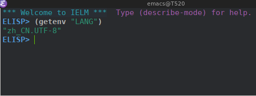
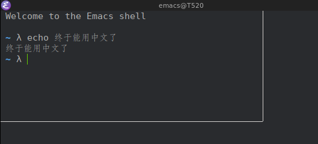

体验Emacs Systemd Daemon Unit
Emacs26.1开始提供了一个systemd user unit file来让我们可以使用sytemd管理Emacs Daemon。
安装好Emacs26.1后，你会发现在 /usr/lib/systemd/user 目录下多了一个 emacs.service 文件，你只需要执行
systemctl --user start emacs.service
就能启动emacs daemon了，或者通过
systemctl --user enable emacs.service
来自动启动emacs daemon。
然而默认的 emacs.service 中没有对 LANG 进行设置，导致在Emacs中无法输入中文。
所以我们还需要对 emacs.service 文件做一些修改，在 Environment 中设置 LANG 的值。
具体的步骤为:
mkdir -p ~/.config/systemd/user/
cp /usr/lib/systemd/user/emacs.service ~/.config/systemd/user
sed -i '/Environment/ s/$/ LANG=zh_CN.UTF-8/' ~/.config/systemd/user/emacs.service
重载修改后的unit file,然后再重启 emacs daemon
systemctl --user daemon-reload systemctl --user restart emacs.service
然后运行 emacsclient -n -c 连接上emacs daemon,运行 (getenv "LANG") 会发现LANG变量已经变成 zh_CN.UTF-8 了

不过，当我按下 Ctrl-SPACE 确依然使用不了中文，这是怎么回事呢()？
我用的是 fcitx, 为了排查问题，在在eshell下运行 fcitx-diagnose 结果为
Welcome to the Emacs shell
~ λ fcitx-diagnose
# 系统信息:
1. `uname -a`:
Linux T520 4.16.11-1-ARCH #1 SMP PREEMPT Tue May 22 21:40:27 UTC 2018 x86_64 GNU/Linux
2. `lsb_release`:
`lsb_release` 未找到.
3. `/etc/lsb-release`:
`/etc/lsb-release` 未找到.
4. `/etc/os-release`:
NAME="Arch Linux"
PRETTY_NAME="Arch Linux"
ID=arch
ID_LIKE=archlinux
ANSI_COLOR="0;36"
HOME_URL="https://www.archlinux.org/"
SUPPORT_URL="https://bbs.archlinux.org/"
BUG_REPORT_URL="https://bugs.archlinux.org/"
5. 桌面环境:
无法确定桌面环境。
6. Bash 版本:
BASH_VERSION='4.4.19(1)-release'
# 环境:
1. DISPLAY:
DISPLAY=':0'
2. 键盘布局:
1. `setxkbmap`:
xkb_keymap {
xkb_keycodes { include "evdev+aliases(qwerty)" };
xkb_types { include "complete" };
xkb_compat { include "complete" };
xkb_symbols { include "pc+us+inet(evdev)" };
xkb_geometry { include "pc(pc105)" };
};
2. `xprop`:
_XKB_RULES_NAMES(STRING) = "evdev", "pc105", "us", "", ""
3. Locale:
1. 全部可用 locale:
C
en_US.utf8
POSIX
zh_CN.utf8
zh_TW.utf8
2. 当前 locale:
LANG=zh_CN.UTF-8
LC_CTYPE="zh_CN.UTF-8"
LC_NUMERIC="zh_CN.UTF-8"
LC_TIME="zh_CN.UTF-8"
LC_COLLATE="zh_CN.UTF-8"
LC_MONETARY="zh_CN.UTF-8"
LC_MESSAGES="zh_CN.UTF-8"
LC_PAPER="zh_CN.UTF-8"
LC_NAME="zh_CN.UTF-8"
LC_ADDRESS="zh_CN.UTF-8"
LC_TELEPHONE="zh_CN.UTF-8"
LC_MEASUREMENT="zh_CN.UTF-8"
LC_IDENTIFICATION="zh_CN.UTF-8"
LC_ALL=
4. 目录：
1. 主目录：
/home/lujun9972
2. `${XDG_CONFIG_HOME}`:
环境变量 `XDG_CONFIG_HOME` 没有设定。
`XDG_CONFIG_HOME` 的当前值是 `~/.config` (`/home/lujun9972/.config`)。
3. Fcitx 设置目录：
当前 fcitx 设置目录是 `~/.config/fcitx` (`/home/lujun9972/.config/fcitx`)。
5. 当前用户：
脚本作为 lujun9972 (1000) 运行。
# Fcitx 状态:
1. 可执行文件:
在 `/usr/bin/fcitx` 找到了 fcitx.
2. 版本:
Fcitx 版本: `4.2.9.5`
3. 进程:
找到了 2 个 fcitx 进程:
4972 fcitx
5014 fcitx-dbus-watc
4. `fcitx-remote`:
`fcitx-remote` 工作正常.
5. DBus 界面:
使用 `dbus-send` 来检查 dbus。
DBus 名称 `org.fcitx.Fcitx` 的所有者是 `:1.0`。
DBus 名称 `org.fcitx.Fcitx` 的 PID 所有者是 `4972`。
# Fcitx 配置界面:
1. 配置工具封装：
在 `/usr/bin/fcitx-configtool` 找到了 fcitx-configtool。
2. 用于 GTK+-2.0 的配置界面：
**未找到 gtk2 的配置界面.**
3. 用于 GTK+-3.0 的配置界面：
在 `/usr/bin/fcitx-config-gtk3` 找到了 `fcitx-config-gtk3`。
4. KDE 的配置界面：
# 前端设置:
## Xim:
1. `${XMODIFIERS}`:
**XMODIFIERS 没有设置**
**请使用您发行版提供的工具将环境变量 XMODIFIERS 设为 "@im=fcitx" 或者将 `export XMODIFIERS=@im=fcitx` 添加到您的 `~/.xprofile` 中. 参见 [输入法相关的环境变量: XMODIFIERS](http://fcitx-im.org/wiki/Input_method_related_environment_variables/zh-cn#XMODIFIERS).**
从环境变量中获取的 Xim 服务名称为 fcitx.
2. 根窗口上的 XIM_SERVERS:
Xim 服务的名称与环境变量中设置的相同.
## Qt:
1. qt4 - `${QT4_IM_MODULE}`:
**请使用您发行版提供的工具将环境变量 QT_IM_MODULE 设为 "fcitx" 或者将 `export QT_IM_MODULE=fcitx` 添加到您的 `~/.xprofile` 中. 参见 [输入法相关的环境变量: QT_IM_MODULE](http://fcitx-im.org/wiki/Input_method_related_environment_variables/zh-cn#QT_IM_MODULE).**
2. qt5 - `${QT_IM_MODULE}`:
**请使用您发行版提供的工具将环境变量 QT_IM_MODULE 设为 "fcitx" 或者将 `export QT_IM_MODULE=fcitx` 添加到您的 `~/.xprofile` 中. 参见 [输入法相关的环境变量: QT_IM_MODULE](http://fcitx-im.org/wiki/Input_method_related_environment_variables/zh-cn#QT_IM_MODULE).**
3. Qt 输入法模块文件:
找到了 Qt4 的输入法模块: `/usr/lib/qt4/plugins/inputmethods/qtim-fcitx.so`.
找到了 fcitx 的 qt 模块: `/usr/lib/fcitx/qt/libfcitx-quickphrase-editor5.so`.
找到了 Qt5 的输入法模块: `/usr/lib/qt/plugins/platforminputcontexts/libfcitxplatforminputcontextplugin.so`.
## Gtk:
1. gtk - `${GTK_IM_MODULE}`:
**请使用您发行版提供的工具将环境变量 GTK_IM_MODULE 设为 "fcitx" 或者将 `export GTK_IM_MODULE=fcitx` 添加到您的 `~/.xprofile` 中. 参见 [输入法相关的环境变量: GTK_IM_MODULE](http://fcitx-im.org/wiki/Input_method_related_environment_variables/zh-cn#GTK_IM_MODULE).**
2. `gtk-query-immodules`:
1. gtk 2:
在 `/usr/bin/gtk-query-immodules-2.0` 找到了 gtk `2.24.32` 的 `gtk-query-immodules`.
版本行:
# Created by /usr/bin/gtk-query-immodules-2.0 from gtk+-2.24.32
已找到 gtk `2.24.32` 的 fcitx 输入法模块.
"/usr/lib/gtk-2.0/2.10.0/immodules/im-fcitx.so"
"fcitx" "Fcitx (Flexible Input Method Framework)" "fcitx" "/usr/share/locale" "ja:ko:zh:*"
2. gtk 3:
在 `/usr/bin/gtk-query-immodules-3.0` 找到了 gtk `3.22.30` 的 `gtk-query-immodules`.
版本行:
# Created by /usr/bin/gtk-query-immodules-3.0 from gtk+-3.22.30
已找到 gtk `3.22.30` 的 fcitx 输入法模块.
"/usr/lib/gtk-3.0/3.0.0/immodules/im-fcitx.so"
"fcitx" "Fcitx (Flexible Input Method Framework)" "fcitx" "/usr/share/locale" "ja:ko:zh:*"
3. Gtk 输入法模块缓存:
1. gtk 2:
在 `/usr/lib/gtk-2.0/2.10.0/immodules.cache` 找到了 gtk `2.24.32` 的输入法模块缓存.
版本行:
# Created by /usr/bin/gtk-query-immodules-2.0 from gtk+-2.24.32
已找到 gtk `2.24.32` 的 fcitx 输入法模块.
"/usr/lib/gtk-2.0/2.10.0/immodules/im-fcitx.so"
"fcitx" "Fcitx (Flexible Input Method Framework)" "fcitx" "/usr/share/locale" "ja:ko:zh:*"
2. gtk 3:
在 `/usr/lib/gtk-3.0/3.0.0/immodules.cache` 找到了 gtk `3.22.30` 的输入法模块缓存.
版本行:
# Created by /usr/bin/gtk-query-immodules-3.0 from gtk+-3.22.30
已找到 gtk `3.22.30` 的 fcitx 输入法模块.
"/usr/lib/gtk-3.0/3.0.0/immodules/im-fcitx.so"
"fcitx" "Fcitx (Flexible Input Method Framework)" "fcitx" "/usr/share/locale" "ja:ko:zh:*"
4. Gtk 输入法模块文件:
1. gtk 2:
找到的全部 Gtk 2 输入法模块文件均存在.
2. gtk 3:
找到的全部 Gtk 3 输入法模块文件均存在.
# 配置:
## Fcitx 插件:
1. 插件配置文件目录:
找到了 fcitx 插件配置目录: `/usr/share/fcitx/addon`.
2. 插件列表:
1. 找到了 27 个已启用的插件:
fcitx-autoeng
fcitx-chttrans
fcitx-classic-ui
fcitx-clipboard
fcitx-dbus
fcitx-freedesktop-notify
fcitx-fullwidth-char
fcitx-imselector
fcitx-ipc
fcitx-ipcportal
fcitx-keyboard
fcitx-kimpanel-ui
fcitx-notificationitem
fcitx-pinyin
fcitx-pinyin-enhance
fcitx-punc
fcitx-quickphrase
fcitx-remote
fcitx-spell
fcitx-sunpinyin
fcitx-table
fcitx-unicode
fcitx-vk
fcitx-x11
fcitx-xim
fcitx-xkb
fcitx-xkbdbus
2. 找到了 1 个被禁用的插件:
fcitx-qw
3. 插件库:
所有插件所需的库都被找到。
4. 用户界面:
找到了 2 个已启用的用户界面插件:
fcitx-classic-ui
fcitx-kimpanel-ui
## 输入法:
1. 找到了 2 个启用的输入法:
fcitx-keyboard-us
sunpinyin
2. 默认输入法:
您已经正确的将一个键盘输入法 "fcitx-keyboard-us" 设为默认.
# 日志:
1. `date`:
2018年 05月 30日 星期三 13:18:42 CST
2. `~/.config/fcitx/log/`:
总用量 0
3. `~/.config/fcitx/log/crash.log`:
`~/.config/fcitx/log/crash.log` 未找到.
~ λ
从诊断信息中可以发现，原来是 GTK_IM_MODULE, QT_IM_MODULE 和 XMODIFIERS 这三个环境变量没有设置。
sed -i '/Environment/ s/$/ GTK_IM_MODULE=fcitx QT_IM_MODULE=fctix XMODIFIERS="@im=fcitx"/' ~/.config/systemd/user/emacs.service
再次重载修改后的unit file,然后再重启 emacs daemon
systemctl --user daemon-reload systemctl --user restart emacs.service
运行 emacsclient -n -c 连接上emacs daemon, 按下 Ctrl-SPC, 这次能用中文了.
 最后的service unit file是这样的
[Unit] Description=Emacs text editor Documentation=info:emacs man:emacs(1) https://gnu.org/software/emacs/ [Service] Type=simple ExecStart=/usr/bin/emacs --fg-daemon ExecStop=/usr/bin/emacsclient --eval "(kill-emacs)" Environment=SSH_AUTH_SOCK=%t/keyring/ssh LANG=zh_CN.UTF-8 GTK_IM_MODULE=fcitx QT_IM_MODULE=fctix XMODIFIERS="@im=fcitx" Restart=on-failure [Install] WantedBy=default.target